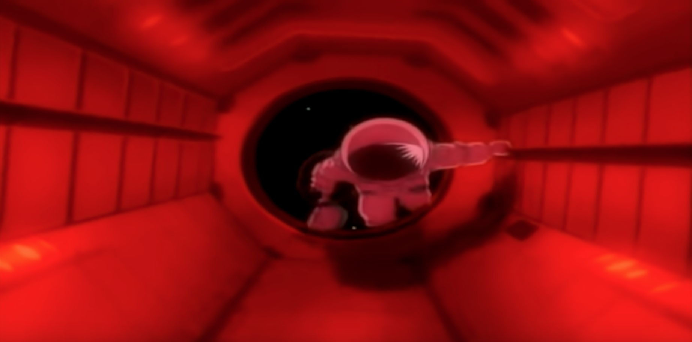
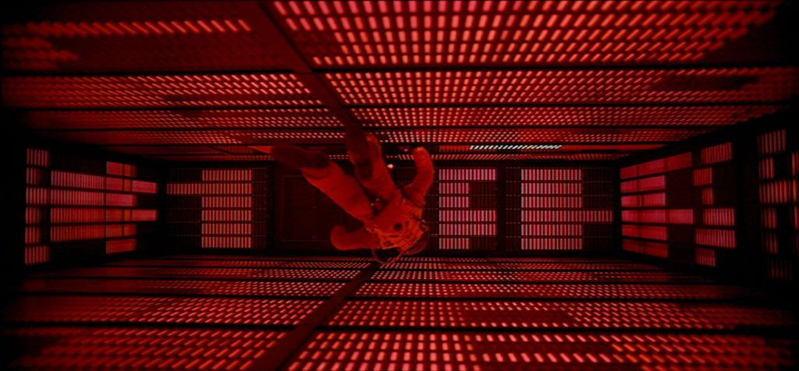
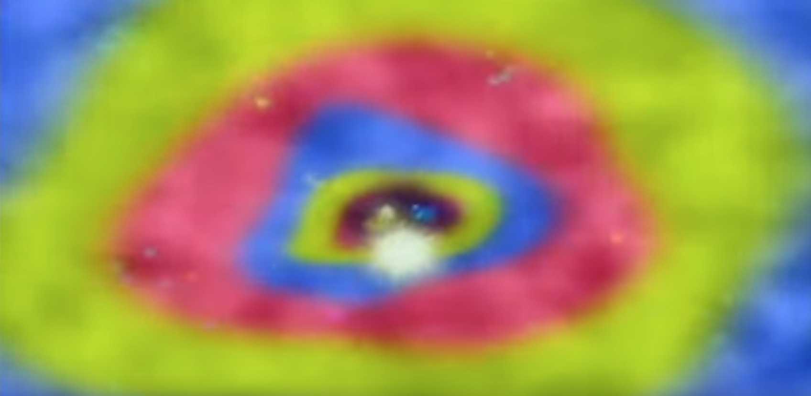
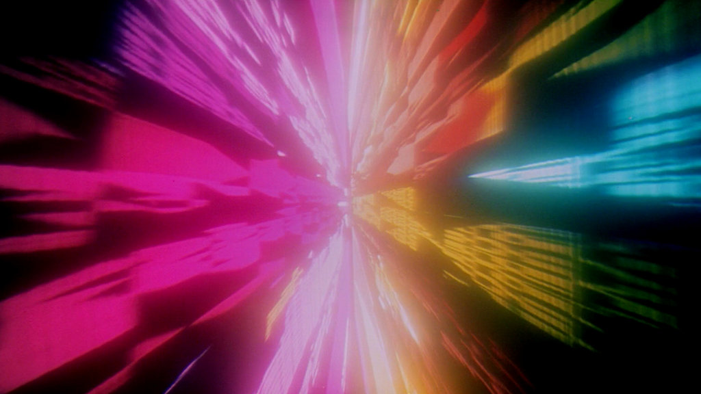
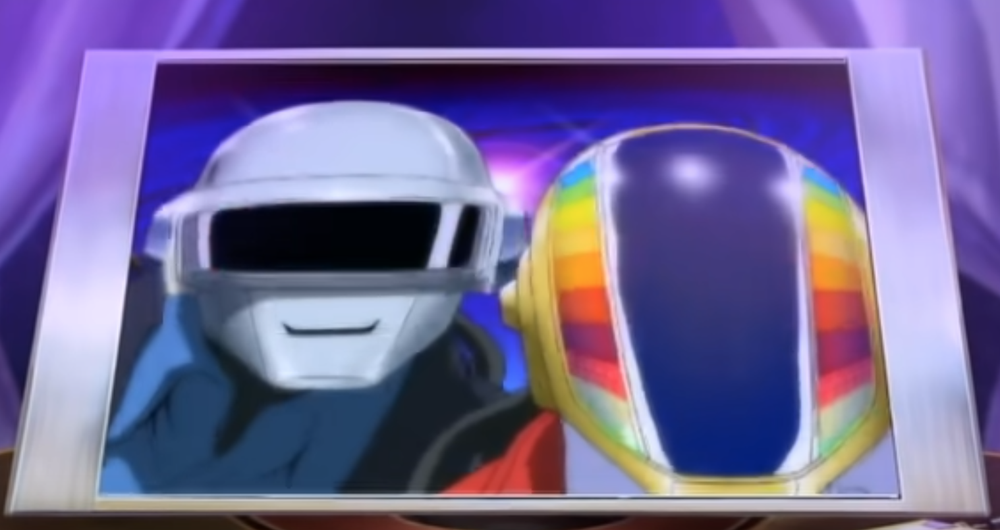
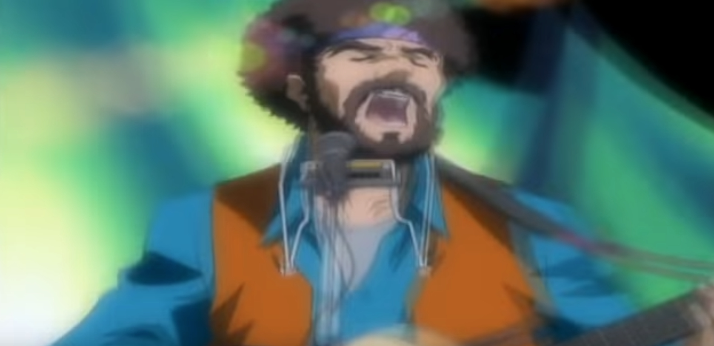
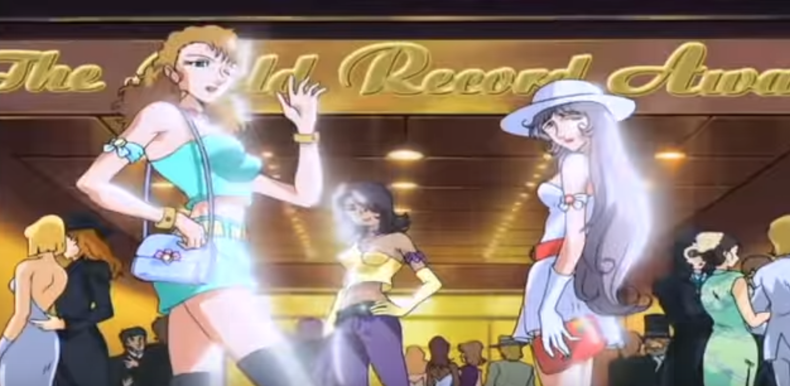
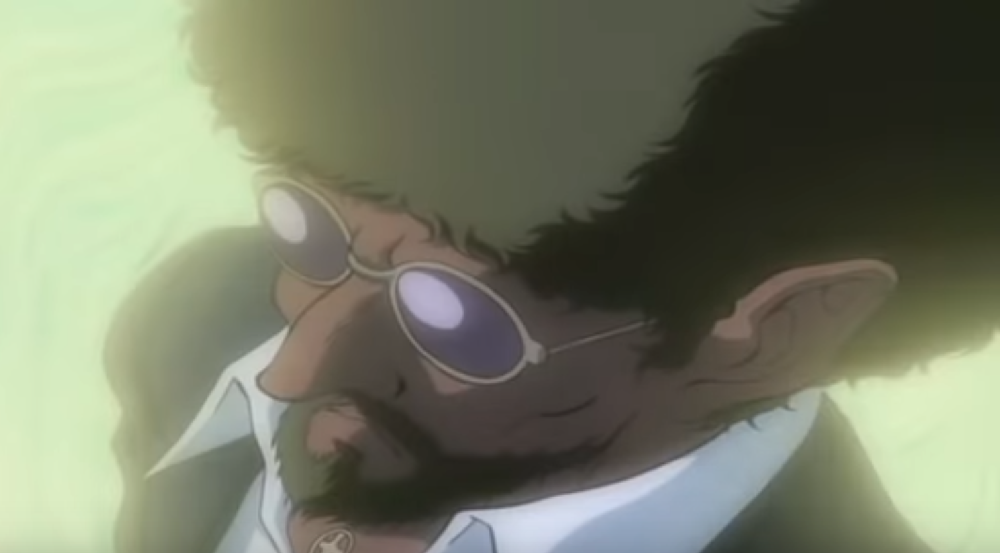
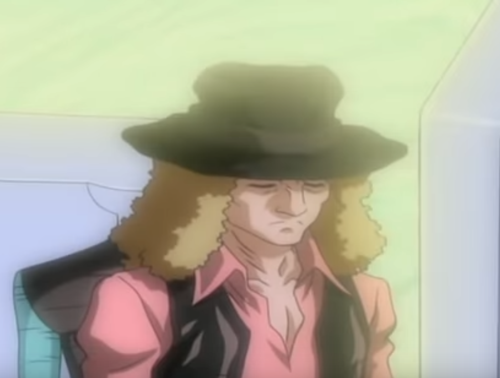
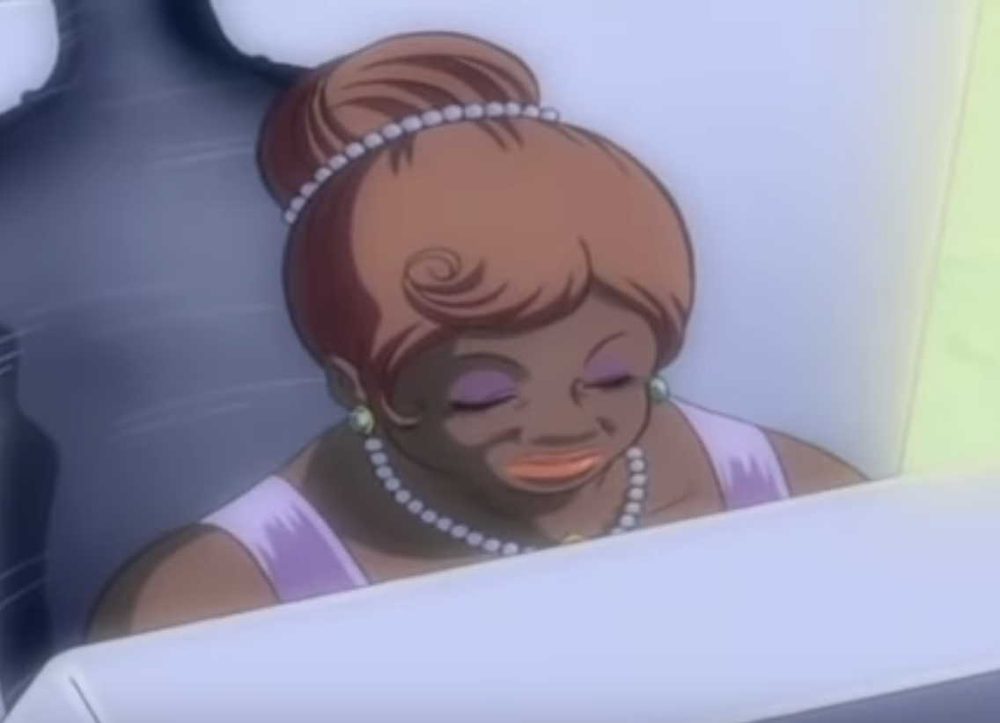

Daft Punk and Interstella 5555
Posted on Sun 11 December 2022 in General
In 2001, Daft Punk were nowhere near the mask-rocking superstars they are today. The only album they had to their credit was their debut, Homework, and their robot masks hadn't even materialized yet. In 2001, they came out with Discovery, Which in many ways has defined their music style and approach for the 21st century.
The Importance of Discovery
Daft Punk didn't have their helmets before discovery.
Let that sink in. Their most iconic feature came about as a story they wove, that there was "An Accident in the Studio", and since then, the helmets themselves have become more iconic than Thomas and Guy. If they choose, they could let the legend live on by handing down the helmets to someone else.
But we deviate.
The sounds in Discovery are very wide ranging: from the lyrical Too Long to the deep Veridis Quo. There's a lot of variety, and while most would just listen to One More Time and Harder, Better, Faster, Stronger and think they're representative of the kind of work Daft Punk does (electronic disco pop with vocoder-ed vocals), that's far from the truth, and every song in this album has a story to tell. The story of a band that's morphing into what they will be for the next two decades.
Interstella 5555
So if every song has a story to tell, how do we tell it? Daft Punk initially planned to release every record on Discovery as a single, with an accompanying music video. If you've seen the MV's for One More Time and Harder, Better, Faster, Stronger, great. If not, let me refresh your memory.
you would've felt an overarching theme there. What ties these (and a couple other MV's) together? In a Pink Floyd-esque move, rather than releasing individual MV's, Daft Punk decided to chain together all the songs in Discovery together to make a complete musical. If that wasn't enough to get you excited, they tied up with Leiji Matsumoto to make it animated rather than live-action.
This was amazing to see as a daft punk fan: The entire story is beautiful, and is about an alien band that's abducted, shipped off to Earth and made to play corporate pop for profiting a major record label. The story is about how they escape this. What's even more interesting is that none of the characters ever speak: it's all just animation and lyrics. Letting the music speak for the characters is amazing, and while it's easy on the ears and eyes of the viewers, I can only imagine how hard it must have been as an artist to create such coherence.
A Deeper Dive
I've just watched this once: more trivia always pops up when I see something multiple times, but what's immediately noticeable is The 2001 effect




Another bit of trivia: even though Daft Punk makes a cameo in the awards scene (Of course they do, they're Daft Punk!), This scene is filled with tributes to people whose music Daft Punk have sampled for Discovery.

Here's Sister Sledge. IL Macquilage Lady was sampled for Aerodynamic
And this is Eddie Johns (?), from whom More Spell on You was sampled for One More Time

These are the Spice Girls?

I'm pretty sure this one is Mozart? (This comes later in the movie)
And this is Bob Marley?

And this is Robert Plant?

I have zero clue who these two are, although they should be famous. Let me know in the comments!

Conclusion
This is a pure visual treat if you're into Daft Punk, and it was an amazing experience delving into their discography. Some of the songs they sampled are amazing in themselves, and I'll be listening to them more, as well as giving this another view and updating whatever I find :)
PS: You can find a list of the sample history of Discovery here